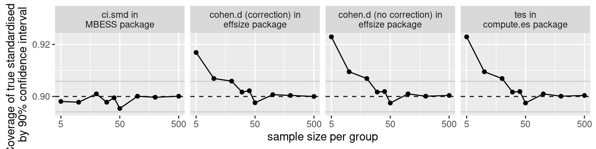

# Set random seed for reproducible results
# (today's date)
RNGversion("3.5.3")
set.seed(2017-02-21)
# Population standardised mean difference
d <- 0.5
# Number of observations per sample
n <- 20
# Generate data
y <- c(rnorm(n, d, sd = 1),
rnorm(n, 0, sd = 1))
x <- factor(c(rep("A", n),
rep("B", n)))Confidence intervals for standardised mean differences
Standardised effect sizes express patterns found in the data in terms of the variability found in the data. For instance, a mean difference in body height could be expressed in the metric in which the data were measured (e.g., a difference of 4 centimetres) or relative to the variation in the data (e.g., a difference of 0.9 standard deviations). The latter is a standardised effect size known as Cohen’s d.
As I’ve written before, I don’t particularly like standardised effect sizes. Nonetheless, I wondered how confidence intervals around standardised effect sizes (more specifically: standardised mean differences) are constructed. Until recently, I hadn’t really thought about it and sort of assumed you would compute them the same way as confidence intervals around raw effect sizes. But unlike raw (unstandardised) mean differences, standardised mean differences are a combination of two estimates subject to sampling error: the mean difference itself and the sample standard deviation. Moreover, the sample standard deviation is a biased estimate of the population standard deviation (it tends to be too low), which causes Cohen’s d to be an upwardly biased estimate of the population standardised mean difference. Surely both of these factors must affect how the confidence intervals around standardised effect sizes are constructed?
It turns out that indeed they do. When I compared the confidence intervals that I computed around a standardised effect size using a naive approach that assumed that the standard deviation wasn’t subject to sampling error and wasn’t biased, I got different results than when I used specialised R functions.
But these R functions all produced different results, too.
Obviously, there may well be more than one way to skin a cat, but this caused me to wonder if the different procedures for computing confidence intervals all covered the true population parameter with the nominal probability (e.g., in 95% of cases for a 95% confidence interval). I ran a simulation to find out, which I’ll report in the remainder of this post. If you spot any mistakes, please let me know.
Introducing the contenders
Below, I’m going to introduce three R functions for computing confidence intervals for standardised effect sizes (standardised mean differences, to be specific). To illustrate how they work, though, I’m first going to generate a two samples from normal distributions with standard deviations of 1 and means of 0.5 and 0, respectively.
Update (2023-08-07): I reran all of the code in this blog post with newer software versions.
cohen.d in the effsize package
The first function is cohen.d from the effsize package. It takes as its arguments the two samples you want to compare and the desired confidence level (here: 90%). You can also specify whether you want to apply hedges.correction, which causes the function to compute Hegdes’ g and confidence intervals for it. (Hedges’ g is less biased than Cohen’s d.)
library(effsize)
cohen.d(y, x, conf.level = 0.9, hedges.correction = FALSE)
Cohen's d
d estimate: 0.811 (large)
90 percent confidence interval:
lower upper
0.257 1.366 90% confidence interval for Cohen’s d: [0.25, 1.37].
cohen.d(y, x, conf.level = 0.9, hedges.correction = TRUE)
Hedges's g
g estimate: 0.795 (medium)
90 percent confidence interval:
lower upper
0.252 1.338 90% confidence interval for Hedges’ g: [0.25, 1.34].
(Incidentally, cohen.d also has a parameter called noncentral, but setting it to TRUE doesn’t seem to work… (Update (2023-08-07): It does now.))
tes in the compute.es package
The second function is tes from the compute.es package. It takes as its arguments the t statistic for the t test comparing the two samples, the sample sizes and the desired confidence level (as a percentage, not as a proportion):
# Compute t-statistic
t.stat <- t.test(y ~ x, var.equal = TRUE)$statistic
# Compute effect sizes and confidence intervals
library(compute.es)
tes(t.stat, n.1 = 20, n.2 = 20, level = 90)Mean Differences ES:
d [ 90 %CI] = 0.81 [ 0.27 , 1.35 ]
var(d) = 0.11
p-value(d) = 0.02
U3(d) = 79.1 %
CLES(d) = 71.7 %
Cliff's Delta = 0.43
g [ 90 %CI] = 0.8 [ 0.26 , 1.33 ]
var(g) = 0.1
p-value(g) = 0.02
U3(g) = 78.7 %
CLES(g) = 71.3 %
Correlation ES:
r [ 90 %CI] = 0.38 [ 0.13 , 0.59 ]
var(r) = 0.02
p-value(r) = 0.02
z [ 90 %CI] = 0.41 [ 0.13 , 0.68 ]
var(z) = 0.03
p-value(z) = 0.02
Odds Ratio ES:
OR [ 90 %CI] = 4.36 [ 1.63 , 11.6 ]
p-value(OR) = 0.02
Log OR [ 90 %CI] = 1.47 [ 0.49 , 2.45 ]
var(lOR) = 0.36
p-value(Log OR) = 0.02
Other:
NNT = 3.47
Total N = 40This function outputs a lot of standardised effect sizes and their confidence intervals. Here, I’m only interested in Cohen’s d, whose 90% confidence interval now is [0.27, 1.35]. (The confidence interval for Hedges’ g is also different from that from the cohen.d function.)
Note, incidentally, that the Cohen’s d and Hedges’ g values are the same for the tes and the cohen.d function; it’s just the confidence intervals that are different.
ci.smd in the MBESS package
Lastly, the ci.smd function from the MBESS package takes as its input a Cohen’s d, the two sample sizes, and the desired confidence level. Here I compute Cohen’s d using the cohen.d function and then feed it to ci.smd.
# Compute Cohen's d
d.stat <- cohen.d(y, x, conf.level = 0.9, hedges.correction = FALSE)$estimate
# Compute confidence intervals
library(MBESS)
ci.smd(smd = d.stat, n.1 = 20, n.2 = 20, conf.level = 0.9)$Lower.Conf.Limit.smd
[1] 0.264
$smd
[1] 0.811
$Upper.Conf.Limit.smd
[1] 1.35This time, the 90% confidence interval is [0.26, 1.35]. It was fairly small differences between the three functions such as these that led me to run the simulation I report below.
Coverage of the population standardised mean difference by different confidence intervals
Method
For the simulation I generated lots of samples from two normal distributions with the same standard deviation whose means where half a standard deviation apart. In other words, the population standardised mean difference was 0.5. For each sample, I computed 90% confidence intervals around the sample standardised mean difference (Cohen’s d) using the cohen.d, tes and ci.smd functions; I also computed 90% confidence intervals around Hedges’ g using the cohen.d function. I then checked how often these intervals contained the population mean standardised difference (0.5). Ideally, this should be the case in about 90% of the samples generated. If it’s fewer than that, the confidence intervals are too narrow; if it’s more than that, they’re too wide. I ran this simulation for different sample sizes, ranging from 5 observations per group to 500 per group.
The R code for this simulation is available at the bottom of this post.
Results

cohen.d, tes and ci.smd functions based on 10,000 simulation runs per sample size. The dashed horizontal line shows the nominal confidence level; the grey lines around it show the values between which the coverage rates should lie with 95% probability if the confidence interval had their nominal coverage rate.As Figure 1 clearly shows, the coverage rates for the confidence intervals computed around Cohen’s d using the ci.smd function are at their nominal level even for small samples. The confidence intervals computed using the cohen.d and tes functions, however, are too wide for sample sizes of up to 50 observations per group.
Conclusions and further reading
First of all, I want to reiterate that I think standardised effect sizes, including standardised mean differences and correlation coefficients, are overvalued and that I think we should strive to interpret raw effect sizes instead.
That said, on a practical level, this simulation suggests that if you nonetheless want to express your results as a standardised mean difference and you want to compute a confidence around it, it’s a good idea to take a look at the MBESS package. The package’s vignette also has a good discussion of how exact confidence intervals can be constructed around standardised effect sizes, and the package provides a fast implementation of these methods.
By contrast, the effsize and compute.es packages seem to rely on overly conservative approximations to these exact methods, and differ between each other in how the variance for Cohen’s d is computed (see here and here).
For those of you interested in further details, Wolfgang Viechtbauer provided some links on Twitter that you may want to take a look at.
R code
For those interested, here’s the R code I used for the simulation. If you spot an error that explains the results above, please let me know.
First, I defined a function, d_ci, that generates two samples from normal distributions with standard deviations of 1. In the simulation, the mean difference between these populations is 0.5, which, since both population have standard deviations of 1, means that the true standardised mean difference is 0.5. Then, four confidence intervals are computed around the sample Cohen’s d:
- Using
cohen.dwith Hedges’ correction.
- Using
tes. (I only used the code relevant to Cohen’s d to speed things up.) - Using
ci.smd. - Using
cohen.dwithout Hedges’ correction.
d_ci simply returns, for each of these four intervals, whether they contain the true population standardised mean difference (i.e., 0.5).
d_ci <- function(d = 0.5, n = 20, ci = 0.80) {
# Two samples with specified d
y <- c(rnorm(n, d, sd = 1),
rnorm(n, 0, sd = 1))
x <- factor(c(rep("A", n),
rep("B", n)))
# Run t-test
ttest <- t.test(y ~ x, var.equal = TRUE, conf.level = ci)
# Effect size using effsize package ----------------------
# with Hedges' correction
es <- effsize::cohen.d(y, x, conf.level = ci,
hedges.correction = TRUE)
d.lo1 <- es$conf.int[1]
d.hi1 <- es$conf.int[2]
# Effect size using compute.es ---------------------------
# This is a selection from the source code for compute.es::tes.
df <- 2 * n - 2
d.est2 <- ttest$statistic * sqrt((2 * n)/(n * n))
var.d <- (2 * n)/(n * n) + (d.est2^2) / (2 * (2 * n))
crit <- qt((1 - ci)/2, df, lower.tail = FALSE)
d.lo2 <- d.est2 - crit * sqrt(var.d)
d.hi2 <- d.est2 + crit * sqrt(var.d)
# MBESS package ---------------------------------------
# (d.est2 computed above for compute.es)
mbess_out <- MBESS::ci.smd(smd = d.est2, n.1 = n, n.2 = n, conf.level = ci)
d.lo3 <- mbess_out$Lower.Conf.Limit.smd
d.hi3 <- mbess_out$Upper.Conf.Limit.smd
# Effect size using effsize package
# no hedges corrections ----------------------
es4 <- effsize::cohen.d(y, x, conf.level = ci,
hedges.correction = FALSE)
d.lo4 <- es4$conf.int[1]
d.hi4 <- es4$conf.int[2]
# In CI? ----------------------------------------------------
d.in.ci1 <- (d < d.hi1 && d > d.lo1) # effsize::cohen.d
d.in.ci2 <- (d < d.hi2 && d > d.lo2) # compute.es::tes
d.in.ci3 <- (d < d.hi3 && d > d.lo3) # MBESS::ci.smd
d.in.ci4 <- (d < d.hi4 && d > d.lo4) # MBESS::ci.smd
# Return --------------------------------------------
return(list(d.in.ci1, d.in.ci2, d.in.ci3, d.in.ci4))
}Then I wrote a function, sim_es, which runs d_ci a set number of times and return the proportion of times the four confidence intervals contained the true population d.
# Run d_ci a couple of times and store the coverage rates
sim_es <- function(runs = 1e1, n = 10, d = 0.5, ci = 0.8) {
reps <- replicate(runs, d_ci(n = n, d = d, ci = ci))
return(list(mean(unlist(reps[1, ])),
mean(unlist(reps[2, ])),
mean(unlist(reps[3, ])),
mean(unlist(reps[4, ]))))
}Next I ran sim_es 10,000 times for 9 different samples, from 5 observations per sample to 500. The desired confidence level was 90%.
# Define the sample sizes
sampleSizes <- c(5, 10, 20, 30, 40, 50,
100, 200, 500)
# Define the confidence level and the number of runs
ci <- 0.90
runs <- 10000
# Evaluate sim_es for different sampleSizes
# but with runs and ci set to the same value each time.
# You can use mapply instead of mcmapply.
# Remove the last line (with mc.cores) in that case.
library(parallel)
results <- mcmapply(sim_es,
n = sampleSizes,
MoreArgs = list(runs = runs, ci = ci),
mc.cores = detectCores())Finally, I stored the results to a dataframe and plotted them.
# Store results in dataframe
d_results <- data.frame(sampleSizes)
d_results$`cohen.d (correction) in\neffsize package` <- unlist(results[1, ])
d_results$`tes in\ncompute.es package` <- unlist(results[2, ])
d_results$`ci.smd in\nMBESS package` <- unlist(results[3, ])
d_results$`cohen.d (no correction) in\neffsize package` <- unlist(results[4, ])
# Load packages for plotting
library(tidyverse)
# Plot
ggplot(d_results |>
gather("Method", "Coverage", -sampleSizes),
aes(x = sampleSizes,
y = Coverage)) +
# Draw lines for expected coverage rate and its 2.5 and 97.5% percentiles.
geom_hline(yintercept = qbinom(p = 0.025, runs, ci)/runs, colour = "grey80") +
geom_hline(yintercept = qbinom(p = 0.975, runs, ci)/runs, colour = "grey80") +
geom_hline(yintercept = ci, linetype = 2, colour = "grey10") +
geom_point() +
geom_line() +
scale_x_log10(breaks = c(5, 50, 500, 5000)) +
scale_y_continuous(breaks = seq(0.8, 1, 0.02)) +
facet_wrap(~ Method, ncol = 4) +
xlab("sample size per group") +
ylab("Coverage of true standardised d\nby 90% confidence interval") +
theme(legend.position = "top", legend.direction = "vertical")Software versions
devtools::session_info()─ Session info ───────────────────────────────────────────────────────────────
setting value
version R version 4.3.1 (2023-06-16)
os Ubuntu 22.04.2 LTS
system x86_64, linux-gnu
ui X11
language en_US
collate en_US.UTF-8
ctype en_US.UTF-8
tz Europe/Zurich
date 2023-08-07
pandoc 3.1.1 @ /usr/lib/rstudio/resources/app/bin/quarto/bin/tools/ (via rmarkdown)
─ Packages ───────────────────────────────────────────────────────────────────
package * version date (UTC) lib source
bit 4.0.5 2022-11-15 [1] CRAN (R 4.3.0)
bit64 4.0.5 2020-08-30 [1] CRAN (R 4.3.0)
cachem 1.0.6 2021-08-19 [2] CRAN (R 4.2.0)
callr 3.7.3 2022-11-02 [1] CRAN (R 4.3.1)
cli 3.6.1 2023-03-23 [1] CRAN (R 4.3.0)
codetools 0.2-19 2023-02-01 [4] CRAN (R 4.2.2)
colorspace 2.1-0 2023-01-23 [1] CRAN (R 4.3.0)
compute.es * 0.2-5 2020-04-01 [1] CRAN (R 4.3.1)
crayon 1.5.2 2022-09-29 [1] CRAN (R 4.3.1)
devtools 2.4.5 2022-10-11 [1] CRAN (R 4.3.1)
digest 0.6.29 2021-12-01 [2] CRAN (R 4.2.0)
dplyr * 1.1.2 2023-04-20 [1] CRAN (R 4.3.0)
effsize * 0.8.1 2020-10-05 [1] CRAN (R 4.3.1)
ellipsis 0.3.2 2021-04-29 [2] CRAN (R 4.2.0)
evaluate 0.15 2022-02-18 [2] CRAN (R 4.2.0)
fansi 1.0.4 2023-01-22 [1] CRAN (R 4.3.1)
farver 2.1.1 2022-07-06 [1] CRAN (R 4.3.0)
fastmap 1.1.0 2021-01-25 [2] CRAN (R 4.2.0)
forcats * 1.0.0 2023-01-29 [1] CRAN (R 4.3.0)
fs 1.5.2 2021-12-08 [2] CRAN (R 4.2.0)
generics 0.1.3 2022-07-05 [1] CRAN (R 4.3.0)
ggplot2 * 3.4.2 2023-04-03 [1] CRAN (R 4.3.0)
glue 1.6.2 2022-02-24 [2] CRAN (R 4.2.0)
gtable 0.3.3 2023-03-21 [1] CRAN (R 4.3.0)
hms 1.1.3 2023-03-21 [1] CRAN (R 4.3.0)
htmltools 0.5.5 2023-03-23 [1] CRAN (R 4.3.0)
htmlwidgets 1.6.2 2023-03-17 [1] CRAN (R 4.3.1)
httpuv 1.6.11 2023-05-11 [1] CRAN (R 4.3.1)
jsonlite 1.8.7 2023-06-29 [1] CRAN (R 4.3.1)
knitr 1.39 2022-04-26 [2] CRAN (R 4.2.0)
later 1.3.1 2023-05-02 [1] CRAN (R 4.3.1)
lifecycle 1.0.3 2022-10-07 [1] CRAN (R 4.3.0)
lubridate * 1.9.2 2023-02-10 [1] CRAN (R 4.3.0)
magrittr 2.0.3 2022-03-30 [1] CRAN (R 4.3.0)
MBESS * 4.9.2 2022-09-19 [1] CRAN (R 4.3.1)
memoise 2.0.1 2021-11-26 [2] CRAN (R 4.2.0)
mime 0.10 2021-02-13 [2] CRAN (R 4.0.2)
miniUI 0.1.1.1 2018-05-18 [1] CRAN (R 4.3.1)
munsell 0.5.0 2018-06-12 [1] CRAN (R 4.3.0)
pillar 1.9.0 2023-03-22 [1] CRAN (R 4.3.0)
pkgbuild 1.4.2 2023-06-26 [1] CRAN (R 4.3.1)
pkgconfig 2.0.3 2019-09-22 [2] CRAN (R 4.2.0)
pkgload 1.3.2.1 2023-07-08 [1] CRAN (R 4.3.1)
prettyunits 1.1.1 2020-01-24 [2] CRAN (R 4.2.0)
processx 3.8.2 2023-06-30 [1] CRAN (R 4.3.1)
profvis 0.3.8 2023-05-02 [1] CRAN (R 4.3.1)
promises 1.2.0.1 2021-02-11 [1] CRAN (R 4.3.1)
ps 1.7.5 2023-04-18 [1] CRAN (R 4.3.1)
purrr * 1.0.1 2023-01-10 [1] CRAN (R 4.3.0)
R6 2.5.1 2021-08-19 [2] CRAN (R 4.2.0)
Rcpp 1.0.11 2023-07-06 [1] CRAN (R 4.3.1)
readr * 2.1.4 2023-02-10 [1] CRAN (R 4.3.0)
remotes 2.4.2 2021-11-30 [2] CRAN (R 4.2.0)
rlang 1.1.1 2023-04-28 [1] CRAN (R 4.3.0)
rmarkdown 2.21 2023-03-26 [1] CRAN (R 4.3.0)
rstudioapi 0.14 2022-08-22 [1] CRAN (R 4.3.0)
scales 1.2.1 2022-08-20 [1] CRAN (R 4.3.0)
sessioninfo 1.2.2 2021-12-06 [2] CRAN (R 4.2.0)
shiny 1.7.4.1 2023-07-06 [1] CRAN (R 4.3.1)
stringi 1.7.12 2023-01-11 [1] CRAN (R 4.3.1)
stringr * 1.5.0 2022-12-02 [1] CRAN (R 4.3.0)
tibble * 3.2.1 2023-03-20 [1] CRAN (R 4.3.0)
tidyr * 1.3.0 2023-01-24 [1] CRAN (R 4.3.0)
tidyselect 1.2.0 2022-10-10 [1] CRAN (R 4.3.0)
tidyverse * 2.0.0 2023-02-22 [1] CRAN (R 4.3.1)
timechange 0.2.0 2023-01-11 [1] CRAN (R 4.3.0)
tzdb 0.4.0 2023-05-12 [1] CRAN (R 4.3.0)
urlchecker 1.0.1 2021-11-30 [1] CRAN (R 4.3.1)
usethis 2.2.2 2023-07-06 [1] CRAN (R 4.3.1)
utf8 1.2.3 2023-01-31 [1] CRAN (R 4.3.1)
vctrs 0.6.3 2023-06-14 [1] CRAN (R 4.3.0)
vroom 1.6.3 2023-04-28 [1] CRAN (R 4.3.0)
withr 2.5.0 2022-03-03 [2] CRAN (R 4.2.0)
xfun 0.39 2023-04-20 [1] CRAN (R 4.3.0)
xtable 1.8-4 2019-04-21 [1] CRAN (R 4.3.1)
yaml 2.3.5 2022-02-21 [2] CRAN (R 4.2.0)
[1] /home/jan/R/x86_64-pc-linux-gnu-library/4.3
[2] /usr/local/lib/R/site-library
[3] /usr/lib/R/site-library
[4] /usr/lib/R/library
──────────────────────────────────────────────────────────────────────────────